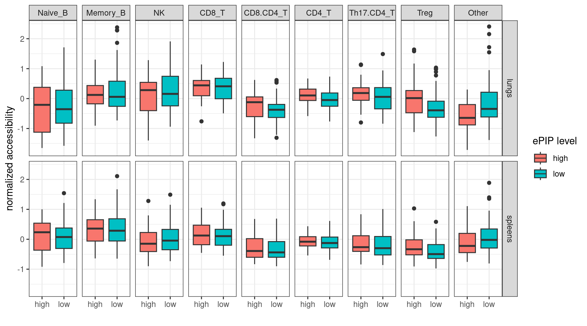
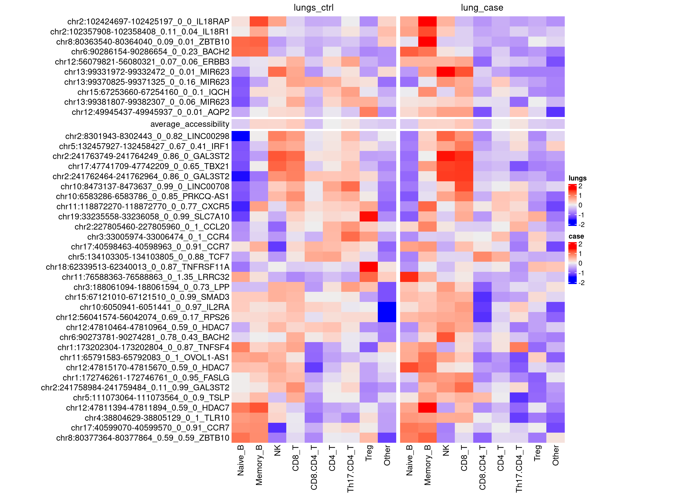
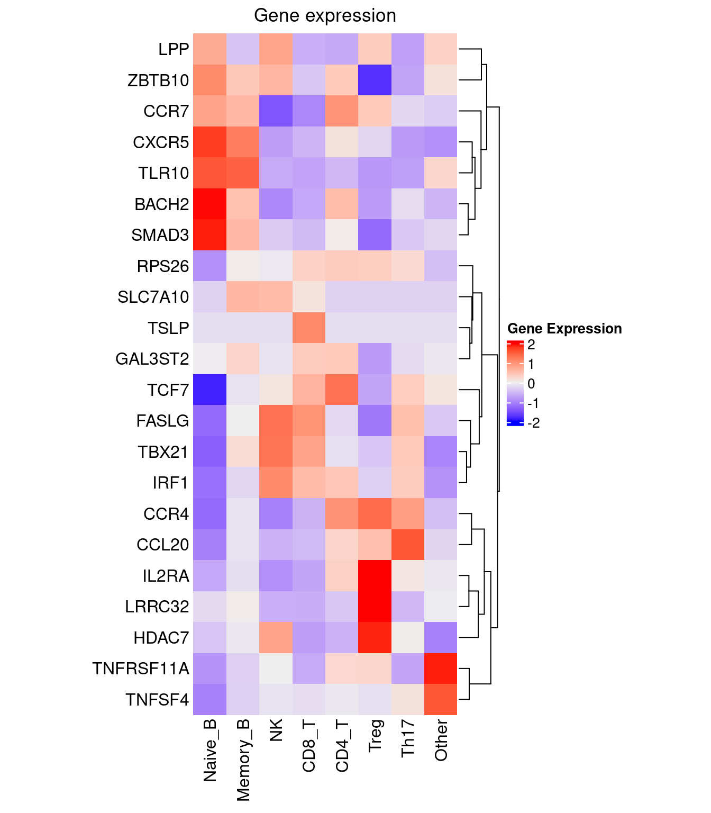

Last updated: 2025-02-18
Checks: 7 0
Knit directory: lung_lymph_scMultiomics/
This reproducible R Markdown analysis was created with workflowr (version 1.7.1). The Checks tab describes the reproducibility checks that were applied when the results were created. The Past versions tab lists the development history.
Great! Since the R Markdown file has been committed to the Git repository, you know the exact version of the code that produced these results.
Great job! The global environment was empty. Objects defined in the global environment can affect the analysis in your R Markdown file in unknown ways. For reproduciblity it’s best to always run the code in an empty environment.
The command set.seed(20221229) was run prior to running
the code in the R Markdown file. Setting a seed ensures that any results
that rely on randomness, e.g. subsampling or permutations, are
reproducible.
Great job! Recording the operating system, R version, and package versions is critical for reproducibility.
Nice! There were no cached chunks for this analysis, so you can be confident that you successfully produced the results during this run.
Great job! Using relative paths to the files within your workflowr project makes it easier to run your code on other machines.
Great! You are using Git for version control. Tracking code development and connecting the code version to the results is critical for reproducibility.
The results in this page were generated with repository version 06b50ec. See the Past versions tab to see a history of the changes made to the R Markdown and HTML files.
Note that you need to be careful to ensure that all relevant files for
the analysis have been committed to Git prior to generating the results
(you can use wflow_publish or
wflow_git_commit). workflowr only checks the R Markdown
file, but you know if there are other scripts or data files that it
depends on. Below is the status of the Git repository when the results
were generated:
Ignored files:
Ignored: analysis/.RData
Ignored: analysis/.Rhistory
Untracked files:
Untracked: analysis/.ipynb_checkpoints/
Untracked: analysis/ArchRLogs/
Untracked: analysis/GOBP_B_CELL_ACTIVATION_INVOLVED_IN_IMMUNE_RESPONSE.v2024.1.Hs.gmt
Untracked: analysis/Rplots.pdf
Untracked: analysis/cross_tissue_DE_u19_k10_fastTopics.Rmd
Untracked: analysis/differential_peak_analysis.Rmd
Untracked: analysis/full_atac_h2g_enrichment.Rmd
Untracked: analysis/identify_T_subsets.Rmd
Untracked: analysis/identify_batch_effects_full_atac_k8.Rmd
Untracked: analysis/run_fastTopics.R
Untracked: analysis/run_fastTopics_lungOnly.R
Untracked: analysis/test.pdf
Untracked: analysis/test_GO_enrichment.ipynb
Untracked: analysis/u19_atac_fastTopics.Rmd
Untracked: analysis/u19_full_atac_fastTopics.Rmd
Untracked: analysis/u19_full_atac_fastTopics_k10.Rmd
Untracked: analysis/u19_full_atac_fastTopics_k8.Rmd
Untracked: analysis/u19_lung_atac_fastTopics_no_correction.Rmd
Untracked: analysis/u19_regulon_enrichment.Rmd
Untracked: analysis/ukb-a-446.log
Untracked: analysis/ukb-a-446_GO_immune.log
Untracked: code/.ipynb_checkpoints/
Untracked: code/compute_pancreas_factors.R
Untracked: code/link_variant_to_function.R
Untracked: code/make_plots.R
Untracked: code/run_GO_enrichment.R
Untracked: code/run_fastTopics.R
Untracked: code/run_magma.sh
Untracked: code/run_magma/
Untracked: code/run_topic_DE_analysis.R
Untracked: data/CRE_0_asthma_fine-mapping_summary.csv
Untracked: data/CRE_0_asthma_fine-mapping_summary.txt
Untracked: data/DA_peaks_Tsub_vs_others.RDS
Untracked: data/DA_peaks_by_cell_type.RDS
Untracked: data/TF_target_sizes_GRN.txt
Untracked: data/Tsuo2022_meta_analysis_asthma_risk_genes.csv
Untracked: data/U19_T_cell_peaks_metadata.RDS
Untracked: data/Wang_2020_T_cell_peaks_metadata.RDS
Untracked: data/annotated_scRNA_data.RDS
Untracked: data/lung_GRN_CD4_T_edges.txt
Untracked: data/lung_GRN_CD8_T_edges.txt
Untracked: data/lung_GRN_Th17_edges.txt
Untracked: data/lung_GRN_Treg_edges.txt
Untracked: output/annotation_reference.txt
Untracked: output/fastTopics
Untracked: output/homer
Untracked: output/ldsc_enrichment
Untracked: output/lung_immune_atac_peaks_high_ePIPs.RDS
Untracked: output/no_bkg/
Untracked: output/positions.bed
Untracked: output/topic3/
Untracked: output/u19_analysis
Untracked: output/u19_output
Untracked: test.pdf
Unstaged changes:
Modified: analysis/U19_motif_analysis.ipynb
Modified: analysis/cross_tissue_DE_u19_fastTopics.Rmd
Modified: analysis/gene_set_analysis_for_RNA_topics.Rmd
Modified: analysis/identify_batch_effects_full_atac.Rmd
Modified: analysis/identify_batch_effects_multiomics.Rmd
Modified: analysis/identify_regulatory_programs_u19_GRN.Rmd
Modified: analysis/index.Rmd
Modified: analysis/rank_TFs_from_pairwise_comparison.ipynb
Deleted: analysis/test_magma.Rmd
Modified: analysis/u19_h2g_enrichment.Rmd
Modified: analysis/u19_lung_atac_fastTopics.Rmd
Deleted: code/run_fastTopic.R
Deleted: lung_immune_fine_mapping.Rproj
Note that any generated files, e.g. HTML, png, CSS, etc., are not included in this status report because it is ok for generated content to have uncommitted changes.
These are the previous versions of the repository in which changes were
made to the R Markdown
(analysis/linking_lung_celltype_OCRs_with_asthma_genetics.Rmd)
and HTML
(docs/linking_lung_celltype_OCRs_with_asthma_genetics.html)
files. If you’ve configured a remote Git repository (see
?wflow_git_remote), click on the hyperlinks in the table
below to view the files as they were in that past version.
| File | Version | Author | Date | Message |
|---|---|---|---|---|
| Rmd | 06b50ec | Jing Gu | 2025-02-18 | changed PIP cutoff |
| html | 4d1b439 | Jing Gu | 2025-02-18 | Build site. |
| Rmd | 6fb29da | Jing Gu | 2025-02-18 | linking OCRs to asthma genetics |
| html | 8d25a9c | Jing Gu | 2025-02-18 | Build site. |
| Rmd | a65bf34 | Jing Gu | 2025-02-18 | linking OCRs to asthma genetics |
| html | b9acdaf | Jing Gu | 2025-02-18 | Build site. |
| Rmd | 6757e27 | Jing Gu | 2025-02-18 | linking OCRs to asthma genetics |
For asthma fine-mapped regions, what cell types have open chromatin at these regions?
For the selected regions, what genes are differentially expressed for cell types with open chromatin?
What we have:
At a cutoff of 0.3 for ePIPs, enhancers with high ePIPs show significant enrichment for the overlapped OCRs.
high_ePIP low_ePIP
overlapped 31 77
not_overlapped 10 73
Fisher's Exact Test for Count Data
data: fisher_x
p-value = 0.007228
alternative hypothesis: true odds ratio is not equal to 1
95 percent confidence interval:
1.284247 7.180885
sample estimates:
odds ratio
2.923176 We computed z-scores separately for each tissue.

| Version | Author | Date |
|---|---|---|
| b9acdaf | Jing Gu | 2025-02-18 |
Y-axis: peak coordinate in hg38, aoa-ePIP, coa-ePIP, nearest gene
| Version | Author | Date |
|---|---|---|
| b9acdaf | Jing Gu | 2025-02-18 |

| Version | Author | Date |
|---|---|---|
| b9acdaf | Jing Gu | 2025-02-18 |
Overall, chromatin levels in control are more open than those in case. Majoriy of CD4 subsets have lower chromatin accessibility, and NK/CD8+ T cells show higher accessibility near several regions, which turns out to be open in negative controls as well.
Do their nearby genes show differential expression?
Cell-type specific OCRs are defined as those have higher accessibility in CD4 T subsets.
The scaling of gene expression was performed separately for each tissue, which agrees with the differential GE analyses done for lungs only. As a result, we see consistency in the differential expression and the heatmap of normalized expression.
Warning: The input is a data frame-like object, convert it to a matrix.
| Version | Author | Date |
|---|---|---|
| b9acdaf | Jing Gu | 2025-02-18 |
R version 4.2.0 (2022-04-22)
Platform: x86_64-pc-linux-gnu (64-bit)
Running under: CentOS Linux 7 (Core)
Matrix products: default
BLAS/LAPACK: /software/openblas-0.3.13-el7-x86_64/lib/libopenblas_haswellp-r0.3.13.so
locale:
[1] LC_CTYPE=en_US.UTF-8 LC_NUMERIC=C LC_TIME=C
[4] LC_COLLATE=C LC_MONETARY=C LC_MESSAGES=C
[7] LC_PAPER=C LC_NAME=C LC_ADDRESS=C
[10] LC_TELEPHONE=C LC_MEASUREMENT=C LC_IDENTIFICATION=C
attached base packages:
[1] stats4 grid stats graphics grDevices utils datasets
[8] methods base
other attached packages:
[1] ComplexHeatmap_2.14.0 BSgenome.Hsapiens.UCSC.hg38_1.4.5
[3] BSgenome_1.66.3 Biostrings_2.66.0
[5] XVector_0.38.0 edgeR_3.40.2
[7] limma_3.58.0 scales_1.3.0
[9] rtracklayer_1.58.0 tidyr_1.3.1
[11] dplyr_1.1.4 rhdf5_2.42.1
[13] SummarizedExperiment_1.28.0 Biobase_2.58.0
[15] MatrixGenerics_1.10.0 Rcpp_1.0.13-1
[17] Matrix_1.6-5 GenomicRanges_1.50.2
[19] GenomeInfoDb_1.34.9 IRanges_2.32.0
[21] S4Vectors_0.36.2 BiocGenerics_0.44.0
[23] matrixStats_1.1.0 data.table_1.16.4
[25] stringr_1.5.1 plyr_1.8.9
[27] magrittr_2.0.3 ggplot2_3.5.1
[29] gtable_0.3.6 gtools_3.9.5
[31] gridExtra_2.3 ArchR_1.0.2
[33] workflowr_1.7.1
loaded via a namespace (and not attached):
[1] bitops_1.0-9 fs_1.6.5 RColorBrewer_1.1-3
[4] doParallel_1.0.17 httr_1.4.7 rprojroot_2.0.4
[7] tools_4.2.0 bslib_0.8.0 DT_0.33
[10] R6_2.5.1 colorspace_2.1-1 GetoptLong_1.0.5
[13] rhdf5filters_1.10.1 withr_3.0.2 tidyselect_1.2.1
[16] processx_3.8.4 compiler_4.2.0 git2r_0.33.0
[19] cli_3.6.3 Cairo_1.6-2 DelayedArray_0.24.0
[22] labeling_0.4.3 sass_0.4.9 callr_3.7.3
[25] digest_0.6.37 Rsamtools_2.14.0 rmarkdown_2.29
[28] pkgconfig_2.0.3 htmltools_0.5.8.1 fastmap_1.2.0
[31] htmlwidgets_1.6.4 GlobalOptions_0.1.2 rlang_1.1.4
[34] rstudioapi_0.17.1 farver_2.1.2 shape_1.4.6
[37] jquerylib_0.1.4 BiocIO_1.8.0 generics_0.1.3
[40] jsonlite_1.8.9 crosstalk_1.2.1 BiocParallel_1.32.6
[43] RCurl_1.98-1.16 GenomeInfoDbData_1.2.9 munsell_0.5.1
[46] Rhdf5lib_1.20.0 lifecycle_1.0.4 stringi_1.8.4
[49] whisker_0.4.1 yaml_2.3.10 zlibbioc_1.44.0
[52] parallel_4.2.0 promises_1.3.2 crayon_1.5.3
[55] lattice_0.22-6 circlize_0.4.15 locfit_1.5-9.10
[58] knitr_1.49 ps_1.8.1 pillar_1.10.0
[61] rjson_0.2.23 codetools_0.2-20 XML_3.99-0.17
[64] glue_1.8.0 evaluate_1.0.1 getPass_0.2-2
[67] png_0.1-8 foreach_1.5.2 vctrs_0.6.5
[70] httpuv_1.6.15 purrr_1.0.2 clue_0.3-66
[73] cachem_1.1.0 xfun_0.49 restfulr_0.0.15
[76] later_1.4.1 tibble_3.2.1 iterators_1.0.14
[79] GenomicAlignments_1.34.1 cluster_2.1.8 statmod_1.5.0